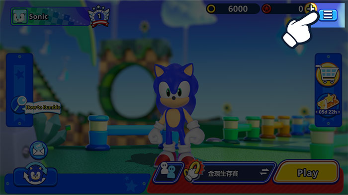
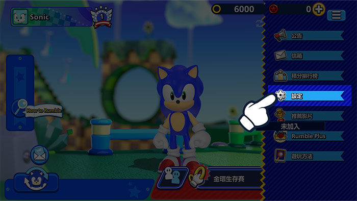
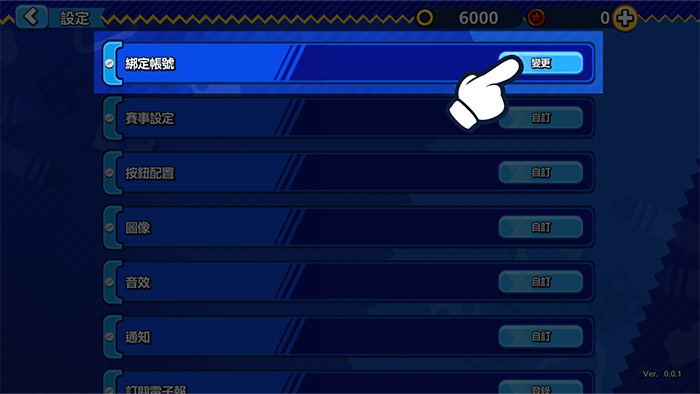
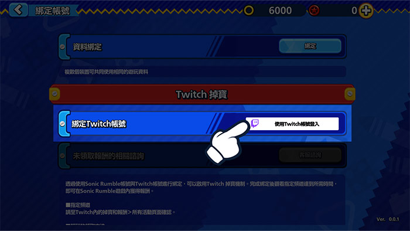
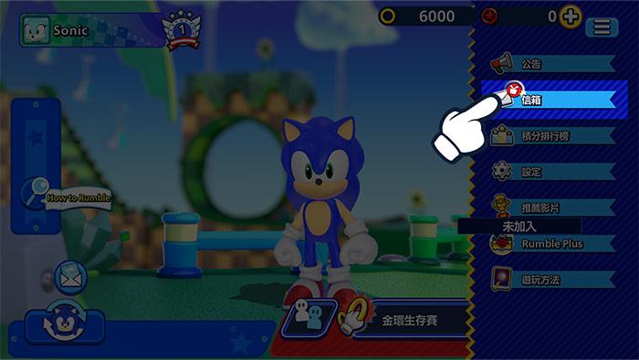
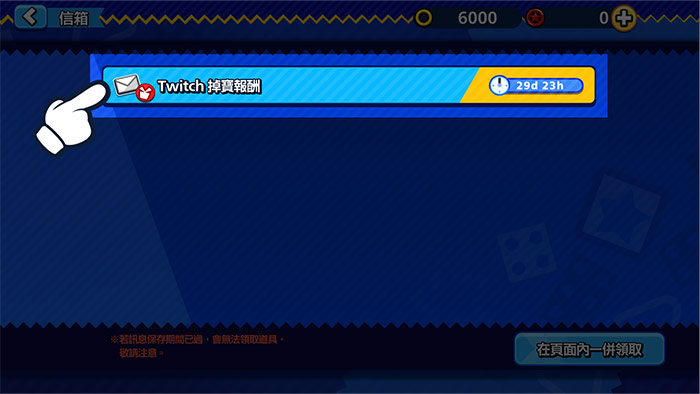

Twitch掉寶觀看直播，
Twitch掉寶觀看直播，
贏取遊戲內獎勵！
立即綁定Twitch帳號！
如何綁定帳號
1在《Sonic Rumble》中按下「選單」按鈕。

2前往「設定」。

3按下「綁定帳號」。

4依序選擇「Twitch掉寶」和「透過Twitch登入」，登入你的Twitch帳號。

5這樣即可將Twitch帳號與《Sonic Rumble》帳號綁定。
如何領取獎勵
1在《Sonic Rumble》中按下「選單」按鈕。

2前往「信箱」查看獎勵。

*若獎勵發放至信箱時正好碰上遊戲維修，可能會無法正常領取獎勵。
若發生此類問題，請前往「選單」>「設定」>「綁定帳號」>「Twitch掉寶」，然後按下「領取」按鈕，系統就會將獎勵重新發放至信箱。
常見問題
- Q什麼是Twitch掉寶？
- A只要在Twitch上觀看直播，就能透過此活動獲得遊戲內獎勵。
參加方式很簡單，只要將《Sonic Rumble》帳號與Twitch帳號綁定即可。 - Q我要如何獲得獎勵？
- A啟用「Twitch掉寶」功能，然後觀看符合條件的《Sonic Rumble》直播來累積掉寶量表，量表集滿後即可獲得獎勵。
- Q我要如何查看自己是否正在參加Twitch掉寶活動？
- A前往此處的「Twitch掉寶庫存」頁面，即可查看你正在參加的Twitch掉寶活動，以及已獲得的獎勵。
- Q掉寶獎勵多久會送達？
- A獎勵會在24小時內發放至你的遊戲內信箱。
如果想在獲得獎勵後將帳號解除綁定，請記得先領取《Sonic Rumble》帳號中的獎勵再進行相關操作。 - Q如果我擁有多個《Sonic Rumble》帳號，我可以每個帳號都領取獎勵嗎？
- ATwitch掉寶獎勵限領一次，每個Twitch帳號一次只能和一個《Sonic Rumble》帳號綁定。
每個《Sonic Rumble》帳號和Twitch帳號無法重複領取同類型獎勵。